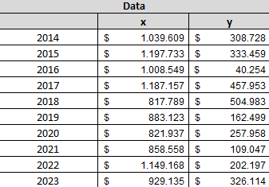
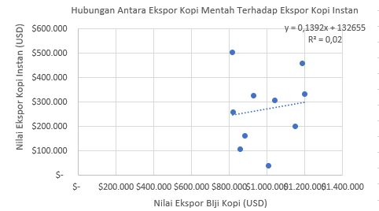

Pengaruh Nilai Ekspor Biji Kopi Indonesia terhadap Nilai Ekspor Produk Turunan Kopi Instan
Mata Kuliah Metode Penelitian Politeknik APP Jakarta

1 Pendahuluan
1.1 Latar belakang
Indonesia dikenal sebagai salah satu eksportir biji kopi terbesar di dunia. Produk ini telah lama mendapatkan pengakuan global atas kualitas dan cita rasanya yang khas. Citra biji kopi Indonesia di mata dunia dapat diukur dari nilai ekspornya, yang mencerminkan popularitas dan penerimaan global terhadap produk ini. Namun, seiring dengan tingginya volume ekspor biji kopi, muncul pertanyaan tentang bagaimana citra positif dari biji kopi Indonesia dapat memengaruhi ekspor produk turunannya, yaitu kopi instan. Jika popularitas biji kopi Indonesia tinggi, logis untuk mengasumsikan bahwa hal tersebut dapat meningkatkan daya tarik produk olahan seperti kopi instan di pasar internasional. Oleh karena itu, penting untuk memahami hubungan antara nilai ekspor biji kopi dan nilai ekspor kopi instan dalam konteks perdagangan global.
1.2 Ruang lingkup
Penelitian ini berfokus pada analisis pengaruh nilai ekspor biji kopi terhadap nilai ekspor produk turunannya, yaitu kopi instan. Studi ini bertujuan untuk mengeksplorasi sejauh mana citra biji kopi Indonesia berdampak pada kinerja perdagangan produk olahan kopi.
1.3 Rumusan masalah
- Apakah citra positif biji kopi Indonesia memengaruhi nilai ekspor kopi instan?
- Bagaimana nilai ekspor biji kopi berkontribusi terhadap peningkatan nilai ekspor produk turunan seperti kopi instan?
1.4 Tujuan dan manfaat penelitian
Penelitian ini bertujuan untuk menganalisis hubungan antara nilai ekspor biji kopi dan nilai ekspor kopi instan. Manfaatnya adalah memberikan wawasan strategis bagi pengambil kebijakan dan pelaku industri dalam meningkatkan daya saing produk olahan kopi Indonesia melalui optimalisasi citra positif.
2 Studi pustaka
Studi pustaka pada penelitian ini mengacu pada berbagai literatur yang relevan. Penelitian terdahulu menyoroti bagaimana citra produk pertanian Indonesia dapat memengaruhi kinerja ekspor produk olahan. Studi lain juga menekankan pentingnya nilai tambah produk hilir dalam meningkatkan daya saing di pasar internasional. Literatur juga mencatat bahwa persepsi kualitas dan popularitas produk mentah, seperti biji kopi, sering kali berdampak langsung pada penerimaan produk turunannya. Sekitar 95% volume ekspor Indonesia di komoditas kopi berupa biji kopi, dan sisanya dalam bentuk kopi soluble seperti roasted coffee, instant coffee, dan ground coffee. Sementara itu, industri kopi raksasa dunia seperti Nestle dan Kraft Jacobs Suchard mendominasi pangsa pasar kopi siap saji (Budiman Hutabarat, 2004). Selain dijadikan sebagai komoditas ekspor, kopi juga berkembang di dalam negeri. Industri kopi domestik tidak hanya bertumpu pada komoditas primer berupa biji kopi, melainkan juga dalam bentuk olahan guna memperoleh nilai tambah dan meningkatkan daya saing (Pandu Ahmad Ihsan Rabbani et al., 2018).Dengan merujuk pada studi ini, penelitian bertujuan untuk memahami bagaimana branding biji kopi memengaruhi ekspor produk turunan dan bagaimana industri domestik serta global berperan dalam konteks ini.
3 Metode penelitian
3.1 Data
Penelitian ini menggunakan data ekspor biji kopi (variabel X) dan ekspor kopi instan (variabel Y) Indonesia selama periode 2014–2023. Data ini diukur dalam nilai USD dan diperoleh dari sumber statistik perdagangan resmi. Variabel X mewakili total nilai ekspor biji kopi setiap tahun, sedangkan variabel Y mencerminkan total nilai ekspor kopi instan pada tahun yang sama.

3.2 Metode analisis
Metode regresi linier sederhana digunakan untuk menganalisis hubungan antara variabel independen (X) dan variabel dependen (Y). Analisis ini mencakup penghitungan koefisien regresi, nilai R2, dan tingkat signifikansi (pp-value) untuk menilai apakah hubungan antara kedua variabel signifikan secara statistik.
4 Pembahasan
4.1 Pembahasan masalah


Berdasarkan hasil analisis, persamaan regresi yang diperoleh adalah: Y=0,1392X+132655Y = 0,1392X + 132655. Nilai R2 sebesar 0,02 menunjukkan bahwa hanya 2% variasi pada ekspor kopi instan (Y) dapat dijelaskan oleh ekspor biji kopi (X). Hasil analisis ini menunjukkan bahwa nilai ekspor biji kopi memiliki hubungan positif yang sangat lemah dengan nilai ekspor kopi instan. Citra biji kopi Indonesia, yang diukur melalui nilai ekspornya, tampaknya tidak secara langsung memengaruhi peningkatan ekspor produk turunannya, seperti kopi instan. Nilai yang rendah mengindikasikan bahwa faktor-faktor lain di luar popularitas biji kopi Indonesia memainkan peran lebih signifikan dalam menentukan kinerja ekspor kopi instan. Koefisien regresi sebesar 0,1392 menunjukkan bahwa setiap peningkatan nilai ekspor biji kopi sebesar 1 USD hanya berkontribusi pada peningkatan nilai ekspor kopi instan sebesar 0,1392 USD.
4.2 Analisis masalah

Ketidaksesuaian antara citra biji kopi dan kinerja ekspor kopi instan dapat disebabkan oleh berbagai faktor. Salah satunya adalah kurangnya investasi dalam promosi produk olahan kopi Indonesia. Selain itu, preferensi pasar internasional mungkin lebih berfokus pada biji kopi sebagai bahan baku utama dibandingkan produk turunannya. Data residual yang signifikan juga menunjukkan bahwa faktor-faktor lain, seperti strategi pemasaran atau hambatan perdagangan, dapat lebih berpengaruh dalam meningkatkan nilai ekspor kopi instan.
5 Kesimpulan
Penelitian ini menyimpulkan bahwa nilai ekspor biji kopi Indonesia hanya memiliki pengaruh yang sangat lemah terhadap nilai ekspor produk turunannya, yaitu kopi instan. Meskipun biji kopi Indonesia memiliki citra yang kuat di pasar global, hal ini belum dioptimalkan untuk mendorong kinerja ekspor kopi instan. Upaya strategis dalam promosi hilirisasi, inovasi produk, dan penetrasi pasar perlu ditingkatkan untuk memaksimalkan potensi produk olahan kopi Indonesia di pasar internasional.
6 Referensi
Hutabarat, B. (2004). Kondisi pasar dunia dan dampaknya terhadap kinerja industri perkopian nasional. Jurnal Agro Ekonomi, 22(2), 147-166.
Rabbani, P. A. I., Putri, N. I., Aviny, E. Y., & Pratiwi, C. P. Analisis Strategi Peningkatan Daya Saing Agribisnis Kopi (Studi Kasus: Mahdani Coffee).